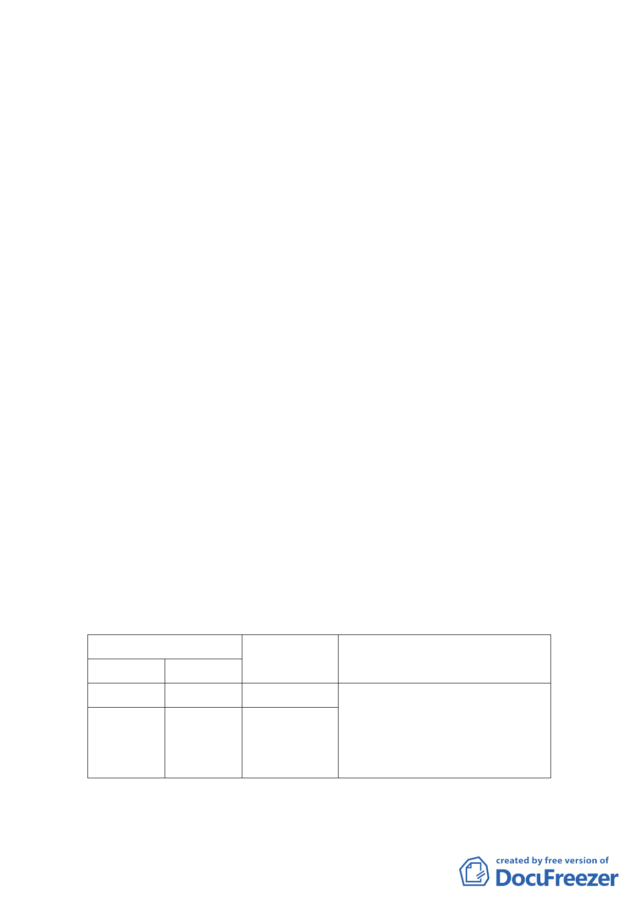

一、計畫緣起
臺北榮民總醫院為臺灣地區主要醫學中心之一，為滿足
日漸增加之醫療需求，故重新檢討院區整體規劃，並擬增設
「新門診大樓」。惟榮總之醫療用地與西側內政部警政署保安
警察第一總隊之機關用地交界之地界崎嶇不整，考量土地權
屬均為公有，故擬透過都市計畫變更及公有土地撥用方式辦
理，重新調整用地邊界，以利雙方土地管理及使用。
案經內政部 101 年 9 月 17 日內授營都字第 1010307386
號函同意本案依都市計畫法第 27 條第 1 項第 4 款規定辦理
個案變更，爰由臺北榮民總醫院提出本都市計畫案。
二、計畫範圍與面積
本計畫範圍位於本市北投區榮總「醫療用地」（崇仰段三
小段 252、253、254、255 地號部分土地），保一總隊「機關
用地」（崇仰段三小段 256-4、266 地號及振興段二小段 30、
31-4 地號部分土地），計畫面積約 776.84 平方公尺。
三、土地權屬
本計畫範圍內土地權屬皆為公有，「機關用地」分別由保
一總隊、教育部及本府財政局管有，「醫療用地」部分由榮總
及國有財產局管有。
四、變更計畫內容
計畫內容
原計畫
新計畫
醫療用地 機關用地
機關用地 醫療用地
變更面積
變更理由
（平方公尺）
388.42
388.42
改善臺北榮民總醫院與內政部警政
署保安警察第一總隊地界崎嶇不
整，以利臺北榮民總醫院第三門診大
樓整體規劃利用。
五、本案經市府 101 年 11 月 27 日府都規字第 10137995403 號函
-6-